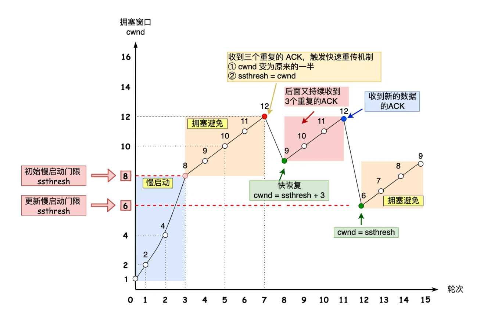

Ch05-TCP 之 拥塞控制
August 5, 2021
在某段时间，若对网络中某一资源的需求超过了该资源所能提供的可用部分，网络性能就要变坏，这种情况就叫做网络拥塞。在计算机网络中数位链路容量（即带宽）、交换结点中的缓存和处理机等，都是网络的资源。若出现拥塞而不进行控制，整个网络的吞吐量将随输入负荷的增大而下降。
当输入的负载到达一定程度吞吐量不会增加，即一部分网络资源会丢失掉，网络的吞吐量维持在其所能控制的最大值，转发节点的缓存不够大这造成分组的丢失是拥塞的征兆。
1. 基本原理 #
拥塞控制是一个全局的过程。

- 慢启动：当发送方每收到一个 ACK，拥塞窗口 cwnd 的大小就会加 1，而允许发送的报文个数增加 2 倍（指数性增长）。
- 拥塞避免：每当收到一个 ACK 时，cwnd 增加 1/cwnd，而允许发送的报文个数增加 1（线性增长）。
- 快速重传：
cwnd = cwnd/2; ssthresh = cwnd。 - 快速恢复：
cwnd = ssthresh + 3，重传丢失的数据包，如果再收到重复的 ACK，那么 cwnd 增加 1。
快速重传和快速恢复算法一般同时使用，快速恢复算法是认为，你还能收到 3 个重复 ACK 说明网络也不那么糟糕。